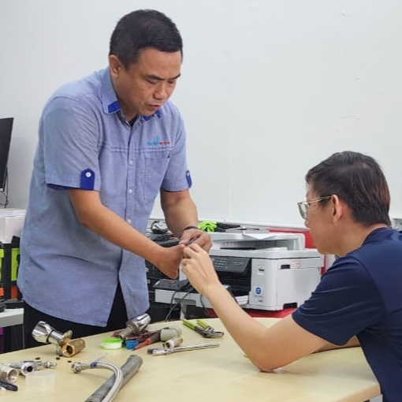

为什么参加？
掌握80%的家庭水管问题处理方法，不再等几天才等到水管工，每次节省RM100–RM300维修费用。由拥有20年以上经验的认证水管师傅亲自教学，使用真实水龙头、排水系统及马桶装置实操。工具与材料全包。
课程形式：理论讲解 + 现场示范 + 分站式实操练习

你将学到
- 安全定位并关闭总水阀 / 分水阀
- 更换水龙头垫片与阀芯（传统与混合式）
- 安装或更换软管，并正确使用生料带（PTFE）
- 清洁洗手盆存水弯与地漏（无需强腐蚀化学剂）
- 使用安全机械方式疏通地漏
- 排查马桶冲水问题（止水皮 / 冲水阀）
- 打造属于你的基础水管工具包
课程流程
- 欢迎与介绍 + 安全说明
- 马来西亚住宅水管基础知识
- 导师现场示范
- 5个实操站轮流练习
- 问题排查 + Q&A
费用与付款
- 早鸟价（4月1日前）： RM 280
- 标准价： RM 350
- 双人同行价（2人）： RM 520
付款方式：Touch ‘n Go 电子钱包 或 银行转账。付款后即确认名额（限10人）。
包含内容
- 4小时由认证水管师傅带领的实战课程
- 工具、练习设备、防护用品及耗材
- 检查清单与速查手册
- 咖啡与茶水
- 结业证书
适合谁参加？
屋主、租客、Airbnb房东、新婚夫妇，或任何不想再为小维修问题等待水管工的人。
报名方式
- 填写报名表。
- 通过 Touch ‘n Go / 银行转账付款（提交后提供详情）。
- 收到确认通知 + 课前指南（地点地图与准备清单）。
可更换参与者，但课程前3天内不接受退款。